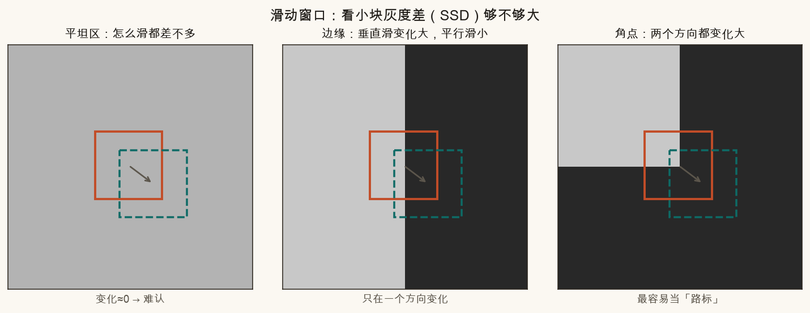
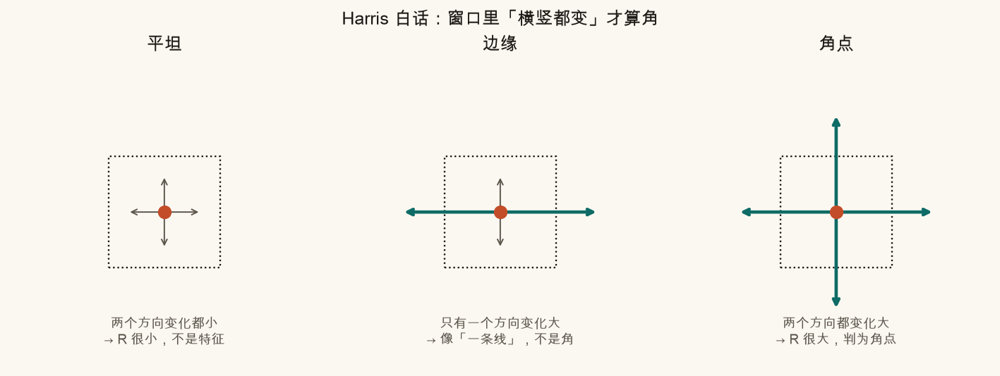
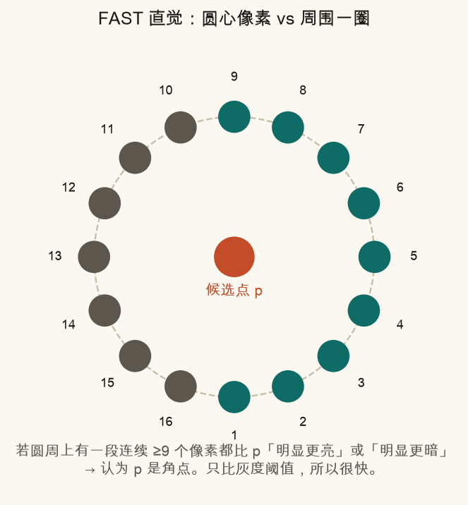
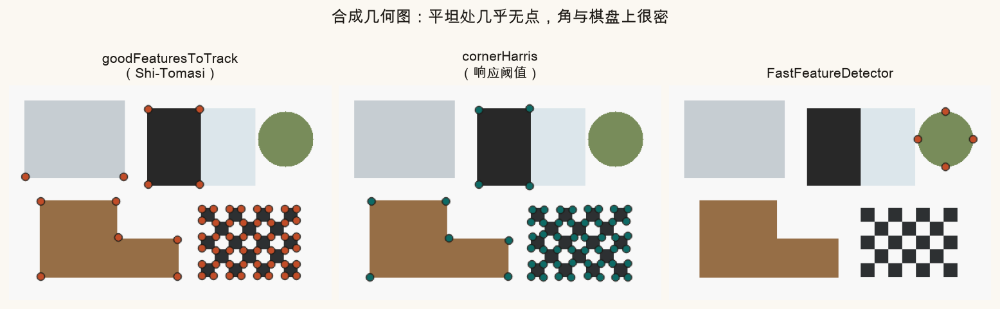
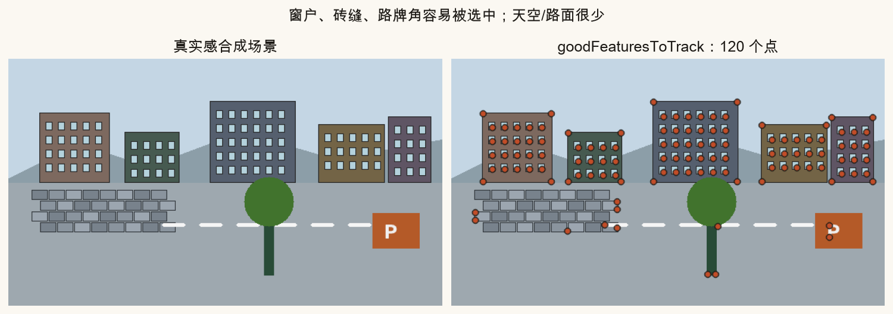
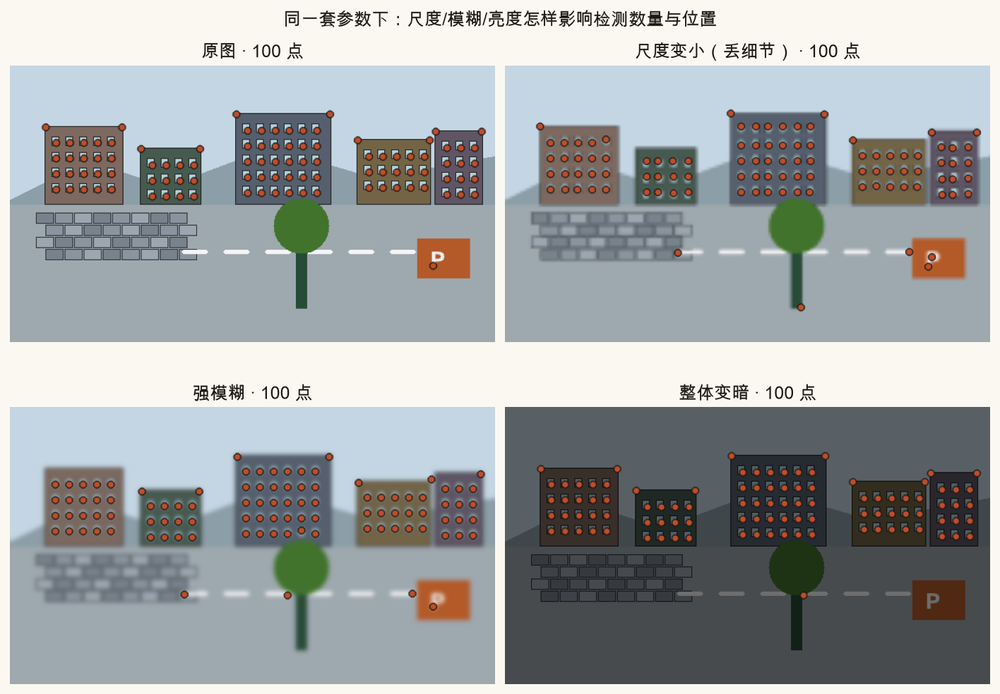
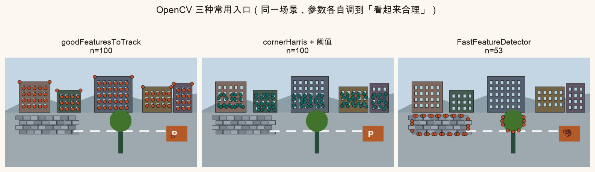

第 5 篇 · 找路标 · 约 50 分钟
要把两张照片对上，先得在每张图上找到「好认的地方」。白墙、天空几乎处处一样，计算机分不清；窗角、砖缝、路牌尖角则像路标。本篇用滑动窗口讲清「为什么是角点」，再碰 Harris、FAST，以及 OpenCV 里怎么画点。
想象你蒙着眼，手指摸一块光滑白墙：左右挪一点，感觉几乎一样——「我在哪」说不清。摸到墙角或窗框交叉处，两个方向手感都变了，一下子就能定位。
计算机也差不多。它在像素上放一个小窗口（比如 5×5），把窗口往四面八方轻轻平移，看窗口里灰度差了多少。常用一种叫 SSD（平方差之和）的量：差得越大，说明这个位置「对位移越敏感」。

拼接流水线里，先「检测特征点」，再「描述 + 匹配」（第 6 篇），最后才估单应 / 叠图。检测器选错地方，后面再聪明也救不回来——平坦误检、纹理太弱，都会让匹配崩。
Harris 角点检测把上面的直觉做成一个分数 R。白话版可以记成三句话：
R 大 ⇔ 窗口里「横竖都变」
不必死记特征方程。看到文献里的 λ₁、λ₂（两个特征值）时，就把它们想成「两个主方向的变化强度」即可。OpenCV 的 cornerHarris 直接给出每个像素的 R；再取阈值、做非极大抑制，就得到离散的角点列表。

和 Harris 很近的还有 Shi-Tomasi（OpenCV 里 goodFeaturesToTrack 的默认）：它更看「两个强度里较弱的那个」——弱的那个也够大，才收这个点。实践里它常比原始 Harris 更稳，所以跟踪、拼图入门首选它。
视频里要实时找很多点时，Harris 的梯度矩阵有点「重」。FAST（Features from Accelerated Segment Test）换了个极简单的规则：
实现上还会用「先抽查第 1、5、9、13 号点」之类的加速：四个里凑不够亮/暗，直接淘汰。所以它名字里有 Accelerated——专为速度设计，手机端、实时稳像里很常见（ORB 检测器底子就是 FAST）。

FAST 对噪声敏感一些，通常会开非极大抑制，并常和模糊/金字塔一起用。本篇先建立「圆周比亮度」的画面；第 6 篇 ORB 会再碰到它。
先看一张「刻意设计」的合成几何图：大灰块（平坦）、黑白竖边（边缘）、L 形拐角、棋盘格、圆盘。

再看一张更像「街景照片」的真实感合成图：楼房窗户、砖墙、路牌、树冠。检测器会自然聚到窗户四角、砖缝交叉、路牌矩形角——天空和大片路面仍然很空。

goodFeaturesToTrack。注意：点多不等于点好——重复纹理（密窗）会产生很多「长得像」的点，给后面匹配埋坑，第 6～7 篇再治。真实拍摄里，同一栋楼可能：远近不同（尺度）、对焦发糊、曝光变暗。检测器若对这类变化过敏，两张图上的「路标集合」对不齐，匹配就会惨。

入门够用的三套 API：
# 1) Shi-Tomasi（推荐入门）
pts = cv2.goodFeaturesToTrack(
gray, maxCorners=100, qualityLevel=0.01, minDistance=10
)
# 2) Harris 响应图 → 自己取阈值
resp = cv2.cornerHarris(np.float32(gray), blockSize=2, ksize=3, k=0.04)
# resp > 某阈值 的像素即候选角点
# 3) FAST
fast = cv2.FastFeatureDetector_create(threshold=25)
kps = fast.detect(gray, None)goodFeaturesToTrack 返回形状大致是 (N, 1, 2) 的坐标；Harris 返回整幅响应图；FAST 返回关键Point 列表（含坐标与响应）。画点时统一成 (x, y) 再 cv2.circle 即可。

参数手感：qualityLevel 越小点越多；minDistance 越大点越疏；FAST 的 threshold 越大越挑剔。先保证「角上有点、天上没点」，再微调数量。
下方画布是一张迷你合成场景（灰块、竖边、L 角、棋盘）。左侧可调响应阈值（越高越挑剔），右侧可调模糊半径。底层用简化版「两方向梯度都要够大」的角点打分——和 Harris 同一直觉，方便在浏览器里即时重算。
建议：先把模糊拉到 0，慢慢提高阈值，看棋盘与 L 角是否还在、灰块是否始终空着；再固定中等阈值，加大模糊，观察点数塌缩——这和图 5-6 是同一现象。
source .venv/bin/activate # 若尚未激活
python code/ch05_features.py终端应出现「自检通过」，并写出 ch05_flat_vs_corner.png、ch05_harris_idea.png、ch05_fast_idea.png、ch05_synthetic_corners.png、ch05_realistic_features.png、ch05_scale_blur_bright.png、ch05_opencv_compare.png，以及你的 ch05_my_features.png。
打开 code/ch05_features.py，改顶部「改这里」四块参数，只影响 ch05_my_features.png。
MY_QUALITY 从 0.01 改成 0.05，点数应变少，且更挑「尖」的角。MY_MIN_DISTANCE 提到 25，点会彼此拉开，密窗上不再挤成一团。MY_BLUR = 9（奇数），再跑：角被抹圆，点数明显下降。MY_MAX_CORNERS 降到 20：只保留响应最强的一批——适合后面做「精简匹配」的直觉实验。小窗口怎么平移，灰度几乎不变，缺少「独特位置」信号；两个方向变化都弱，Harris/FAST 响应都上不去。
边缘：主要只有一个方向灰度变化大。角点：两个主方向都变化大，响应 R 才高。
圆心像素与圆周上一圈像素的亮度差：若有一段连续足够多的点都明显更亮或更暗，就判为角点。
通常变少。模糊抹平梯度/对比度，角点响应变弱，过不了原来的阈值。
cv2.goodFeaturesToTrack（默认 Shi-Tomasi）。Harris 与 FAST 也可，但前者要自己拧响应阈值，后者对噪声和阈值更敏感。
检测只给出「在哪」。下一篇给每个点做描述子（指纹），再用暴力匹配 / Lowe 比率把两图的点对起来，并专门盯误匹配。
第 6 篇 · 描述子与特征匹配（待写）